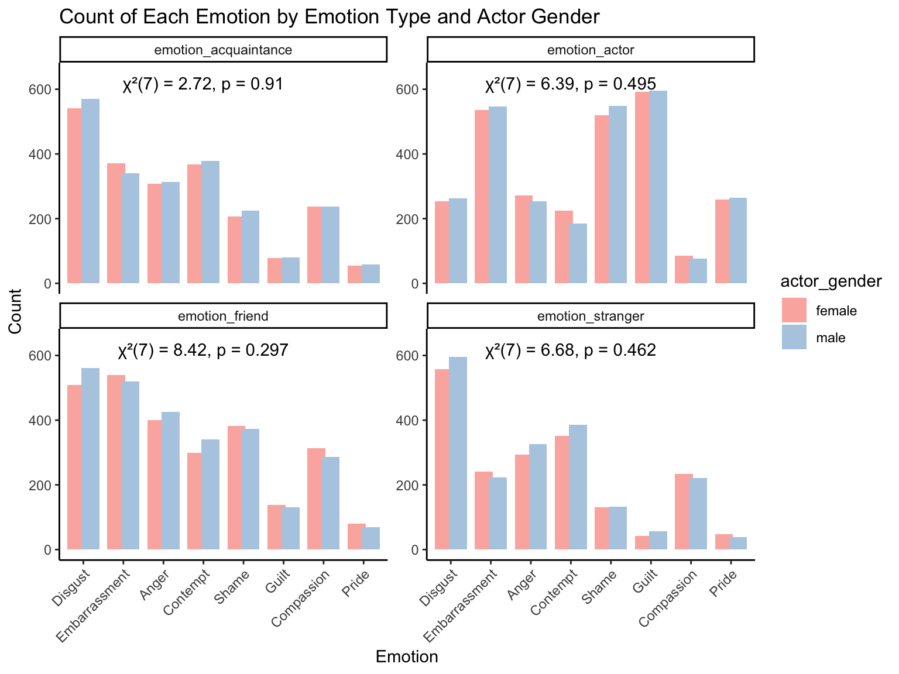
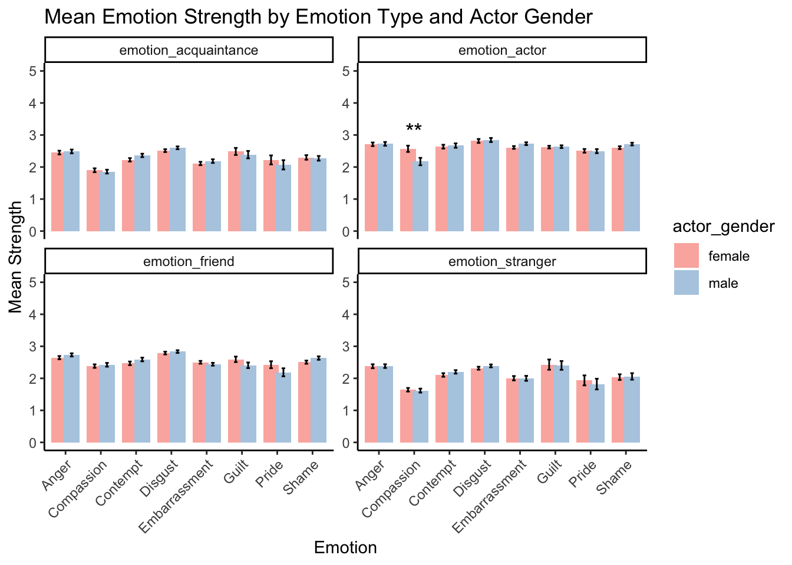
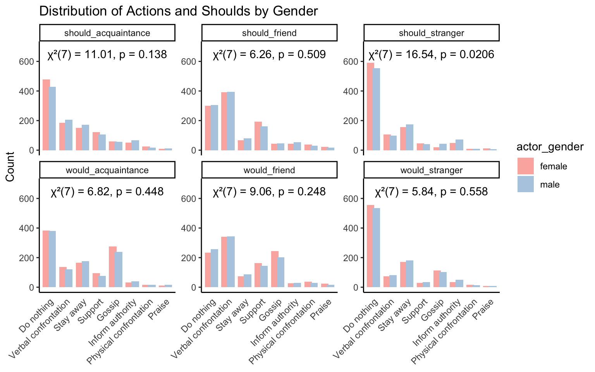
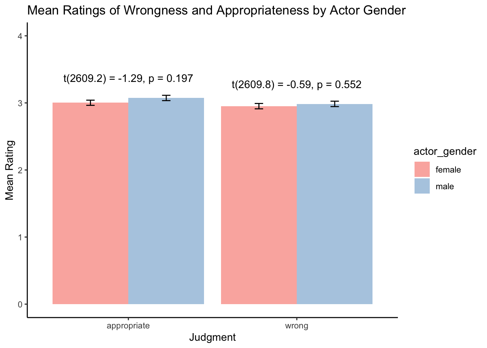
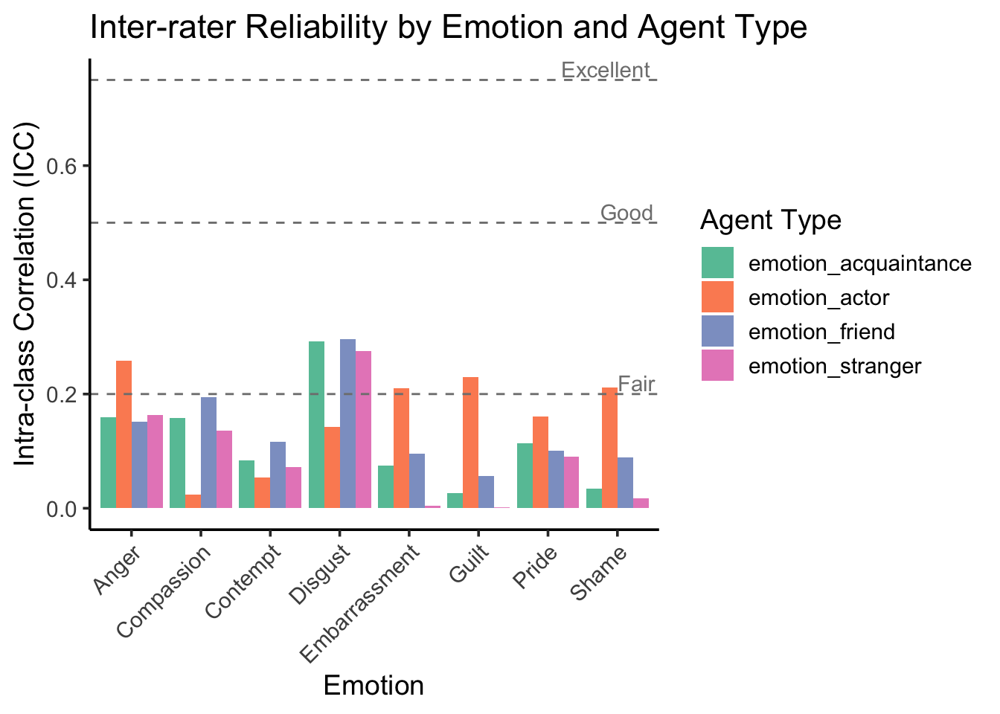
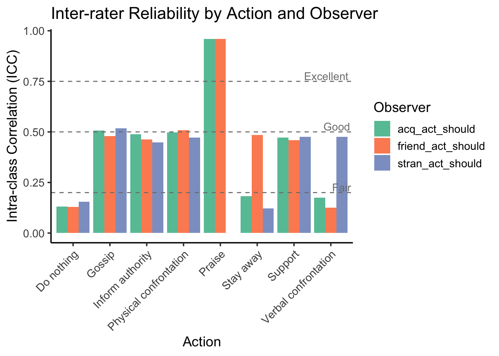
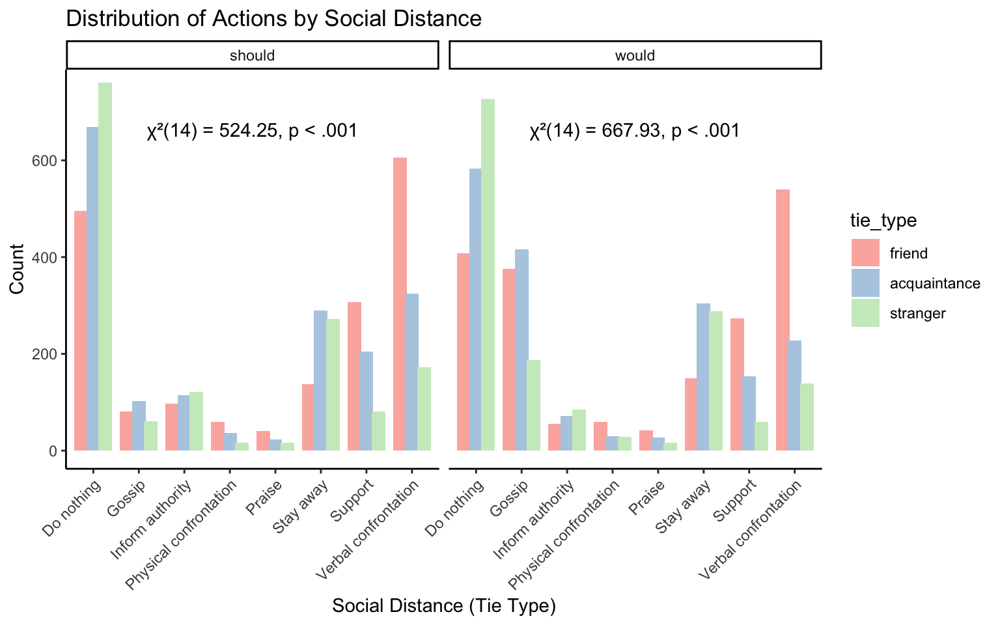
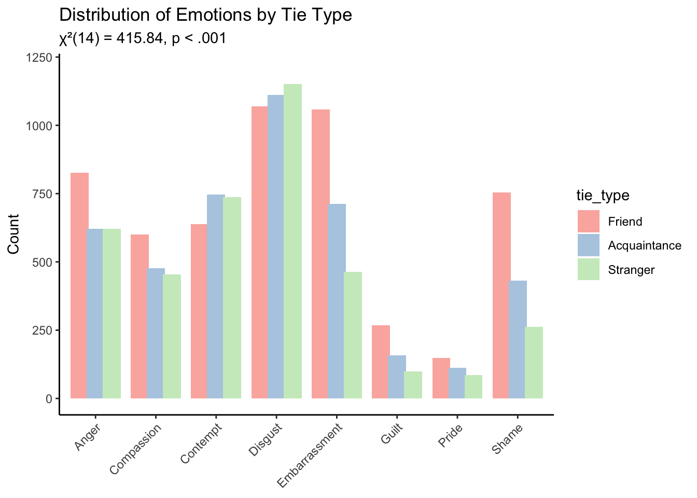

Code
wide<-read.csv( "data/human-wide.csv")
long<-read.csv( "data/human-long.csv")
df<-long %>% filter(strength_value>0)wide<-read.csv( "data/human-wide.csv")
long<-read.csv( "data/human-long.csv")
df<-long %>% filter(strength_value>0)table1(~ gender + as.numeric(age)+race,data=distinct(df,id,.keep_all = TRUE))| Overall (N=868) |
|
|---|---|
| gender | |
| Female | 463 (53.3%) |
| Male | 394 (45.4%) |
| Non-binary | 7 (0.8%) |
| Prefer not to say | 4 (0.5%) |
| as.numeric(age) | |
| Mean (SD) | 45.3 (13.6) |
| Median [Min, Max] | 45.0 [20.0, 80.0] |
| race | |
| 1 (0.1%) | |
| Asian | 73 (8.4%) |
| Black or African American | 104 (12.0%) |
| Hispanic/latinx | 56 (6.5%) |
| Mixed | 28 (3.2%) |
| Others | 5 (0.6%) |
| White or Caucasian | 601 (69.2%) |
#table1(~ emotion | actor_gender+emo_type,df)
#table1(~ strength_value |emotion+actor_gender,filter(df, emo_type == "emotion_actor"))# Count number of occurrences of each emotion
emotion_count <- df %>%
group_by(emo_type, emotion, actor_gender) %>%
summarise(count = n(), .groups = "drop")
# Compute chi-square test for each emo_type
gender_stats <- df %>%
group_by(emo_type) %>%
summarise(
test = list(chisq.test(table(emotion, actor_gender))),
.groups = "drop"
) %>%
mutate(
label = map_chr(test, ~{
res <- .
paste0("χ²(", res$parameter, ") = ", round(res$statistic,2),
", p = ", signif(res$p.value,3))
})
)
# Determine y position for labels (above bars)
label_positions <- emotion_count %>%
group_by(emo_type) %>%
summarise(y_pos = max(count) + 1, .groups = "drop") %>%
left_join(gender_stats %>% select(emo_type, label), by = "emo_type") %>%
mutate(x = 4,y=620) # approximate center above bars
# Bar plot with male/female side by side
ggplot(emotion_count, aes(x = reorder(emotion, -count), y = count, fill = actor_gender)) +
geom_col(position = position_dodge(width = 0.7)) +
facet_wrap(~emo_type, scales = "free_y") +
geom_text(data = label_positions,
aes(x = x, y = y, label = label),
inherit.aes = FALSE,
vjust = 0.5, hjust = 0.5) +
labs(
x = "Emotion",
y = "Count",
title = "Count of Each Emotion by Emotion Type and Actor Gender"
) +
theme_classic() +
theme(axis.text.x = element_text(angle = 45, hjust = 1)) +
scale_fill_brewer(palette = "Pastel1")+
coord_cartesian(ylim = c(0, 650)) # consistent y-axis
emotion_summary <- df %>%
group_by(emo_type, emotion, actor_gender) %>%
summarise(
mean_strength = mean(strength_value, na.rm = TRUE),
se_strength = sd(strength_value, na.rm = TRUE) / sqrt(n()),
n = n(),
.groups = "drop"
)
# t-tests for strength_value by gender for each emotion × emo_type
t_results <- df %>%
group_by(emo_type, emotion) %>%
summarise(
p_value = tryCatch(t.test(strength_value ~ actor_gender)$p.value,
error = function(e) NA_real_),
.groups = "drop"
) %>%
mutate(sig = case_when(
p_value < 0.001 ~ "***",
p_value < 0.01 ~ "**",
p_value < 0.05 ~ "*",
TRUE ~ ""
))
# Position for stars
# Compute label positions for significance stars
label_positions <- emotion_summary %>%
left_join(t_results %>%
filter(sig != "") %>%
select(emo_type, emotion, sig), by = c("emo_type", "emotion")) %>%
filter(!is.na(sig)) %>% # keep only significant tests
group_by(emo_type, emotion) %>%
summarise(
y_pos = max(mean_strength + se_strength) + 0.2, # place above the tallest bar
sig = first(sig), # take the sig for this group
.groups = "drop"
)
# Plot
ggplot(emotion_summary, aes(x = emotion, y = mean_strength, fill = actor_gender)) +
geom_col(position = position_dodge(width = 0.7)) +
geom_errorbar(aes(ymin = mean_strength - se_strength,
ymax = mean_strength + se_strength),
width = 0.2, position = position_dodge(width = 0.7)) +
geom_text(data = label_positions,
aes(x = emotion, y = y_pos, label = sig),
inherit.aes = FALSE, vjust = 0, hjust = 0.5, size = 5) +
facet_wrap(~emo_type, scales = "free_y") +
labs(
x = "Emotion",
y = "Mean Strength",
title = "Mean Emotion Strength by Emotion Type and Actor Gender"
) +
theme_classic() +
theme(axis.text.x = element_text(angle = 45, hjust = 1)) +
scale_fill_brewer(palette = "Pastel1") +
coord_cartesian(ylim = c(0,5))
t_results# A tibble: 32 × 4
emo_type emotion p_value sig
<chr> <chr> <dbl> <chr>
1 emotion_acquaintance Anger 0.667 ""
2 emotion_acquaintance Compassion 0.626 ""
3 emotion_acquaintance Contempt 0.0706 ""
4 emotion_acquaintance Disgust 0.166 ""
5 emotion_acquaintance Embarrassment 0.342 ""
6 emotion_acquaintance Guilt 0.535 ""
7 emotion_acquaintance Pride 0.451 ""
8 emotion_acquaintance Shame 0.791 ""
9 emotion_actor Anger 0.867 ""
10 emotion_actor Compassion 0.00974 "**"
# ℹ 22 more rowslibrary(tidyverse)
library(forcats)
# Prepare plot data
plot_data <- wide %>%
select(
id,
actor_gender,
would_stranger = stran_act,
should_stranger = stran_act_should,
would_acquaintance = acq_act,
should_acquaintance = acq_act_should,
would_friend = friend_act,
should_friend = friend_act_should
) %>%
pivot_longer(
cols = would_stranger:should_friend,
names_to = "variable",
values_to = "value"
)%>%
distinct(id, actor_gender, variable, value) %>%
mutate(value = factor(value)) %>%
group_by(variable, actor_gender) %>%
mutate(value = fct_infreq(value)) %>%
ungroup()
# Chi-square test results
test_results <- plot_data %>%
group_by(variable) %>%
summarise(
test = list(chisq.test(table(value, actor_gender))),
.groups = "drop"
) %>%
mutate(
label = map_chr(test, ~{
res <- .
paste0("χ²(", res$parameter, ") = ", round(res$statistic,2),
", p = ", signif(res$p.value,3))
})
)
# Add y-position for label (centered above each facet)
label_positions <- plot_data %>%
group_by(variable) %>%
summarise(y_pos = max(table(value)) + 1, .groups = "drop") %>% # or a fixed number
left_join(test_results %>% select(variable, label), by = "variable") %>%
mutate(x = 4.5,y=650) # center x (approximate middle of the categories)
# Plot
ggplot(plot_data, aes(x = value, fill = actor_gender)) +
geom_bar(position = position_dodge(width = 0.7)) +
facet_wrap(~variable, scales = "free_y") +
geom_text(data = label_positions,
aes(x = x, y = y, label = label),
inherit.aes = FALSE,
vjust = 0.5, hjust = 0.5) +
labs(title = "Distribution of Actions and Shoulds by Gender",
x = NULL,
y = "Count") +
theme_classic() +
scale_fill_brewer(palette = "Pastel1")+
theme(
axis.text.x = element_text(angle = 45, hjust = 1), # rotate 45 degrees
axis.ticks.x = element_blank()
)+
coord_cartesian(ylim = c(0, 700)) # consistent y-axis
# Summarize mean and SE
summary_stats <- wide %>%
pivot_longer(cols = c(appropriate, wrong),
names_to = "judgment", values_to = "rating") %>%
group_by(actor_gender, judgment) %>%
summarise(
mean_rating = mean(rating, na.rm = TRUE),
se_rating = sd(rating, na.rm = TRUE) / sqrt(n()),
.groups = "drop"
)
# Compute t-test results for each judgment
test_results <- wide %>%
pivot_longer(cols = c(appropriate, wrong),
names_to = "judgment", values_to = "rating") %>%
group_by(judgment) %>%
summarise(
t_test = list(t.test(rating ~ actor_gender)),
.groups = "drop"
) %>%
mutate(
label = map_chr(t_test, ~{
res <- .
paste0("t(", round(res$parameter,1), ") = ", round(res$statistic,2),
", p = ", signif(res$p.value,3))
})
)
# Determine y position for the label (above bars)
label_positions <- summary_stats %>%
group_by(judgment) %>%
summarise(y_pos = max(mean_rating + se_rating) + 0.2, .groups = "drop") %>%
left_join(test_results %>% select(judgment, label), by = "judgment")
# Bar plot with error bars and test results
ggplot(summary_stats, aes(x = judgment, y = mean_rating, fill = actor_gender)) +
geom_col(position = position_dodge(width = 0.9)) +
geom_errorbar(aes(ymin = mean_rating - se_rating,
ymax = mean_rating + se_rating),
width = 0.1,
position = position_dodge(width = 0.9)) +
geom_text(data = label_positions,
aes(x = judgment, y = y_pos, label = label),
inherit.aes = FALSE,
vjust = 0) +
labs(
x = "Judgment",
y = "Mean Rating",
title = "Mean Ratings of Wrongness and Appropriateness by Actor Gender"
) +
theme_classic() +
scale_y_continuous(limits = c(0, 4))+
scale_fill_brewer(palette = "Pastel1")
# Krippendorff’s α requires that pairs of raters share overlapping items so that you can estimate their pairwise agreement structure. Every “pair of raters” contributes disagreement terms based on how similarly they rate the same items. If each rater only overlaps with one or two others on a few items, you don’t have enough pairwise co-ratings to estimate (observed disagreement) reliably. In the extreme case (each rater rates unique items), pairwise matrix is undefined.
# Function to compute Krippendorff's alpha for one emotion
compute_alpha_emotion <- function(df, emotion_name,emo_type_name) {
tmp <- df %>%
filter(emo_type == emo_type_name) %>%
filter(emotion == emotion_name) %>%
select(behavior, id, strength_value) %>%
# mutate(strength_value = ifelse(strength_value == 0, NA, strength_value)) %>%
group_by(behavior) %>%
summarise(ratings = list(strength_value), .groups = "drop")
# Combine all item ratings into a matrix: rows = items, columns = ratings for that item
max_raters <- max(sapply(tmp$ratings, length))
mat <- t(sapply(tmp$ratings, function(x) {
# pad with NA if fewer ratings
c(x, rep(NA, max_raters - length(x)))
}))
# compute Krippendorff's alpha
kripp.alpha(mat, method = "ordinal")$value
}
# Loop over all emo_types and emotions
emo_types <- unique(long$emo_type)
emotions <- unique(long$emotion)
results_df <- expand.grid(emotion = emotions, emo_type = emo_types)
# Use pmap to pass each row as scalar arguments
results_df$alpha <- pmap_dbl(
list(results_df$emotion, results_df$emo_type),
function(e, etype) compute_alpha_emotion(long, e, etype)
)
# Pivot to wide: rows = norm violator type, columns = emotions
results_wide <- results_df %>%
pivot_wider(names_from = emotion, values_from = alpha) %>%
arrange(factor(emo_type, levels = emo_types))
results_wide# Compute standard deviation per emotion × behavior
item_emotion_strength<-long %>%
group_by(emo_type,emotion, behavior) %>%
summarise(item_mean=mean(strength_value,na.rm=TRUE),
item_sd = sd(strength_value, na.rm = TRUE)) #ICC = 0.05 → Only 5% of rating variance is due to systematic differences between behaviors; raters largely disagree or interpret scales differently.
icc_emotion <- long %>%
group_by(emotion, emo_type) %>%
group_modify(~{
data_sub <- .x
# Fit random-effects model
m <- tryCatch(
lmer(strength_value ~ 1 + (1 | behavior) + (1 | id), data = data_sub),
error = function(e) NULL
)
# Extract variance components
v <- as.data.frame(VarCorr(m))
sigma_b <- v[v$grp == "behavior", "vcov"]
sigma_r <- v[v$grp == "id", "vcov"]
sigma_e <- attr(VarCorr(m), "sc")^2
# Compute ICC for "behavior"
ICC <- sigma_b / (sigma_b + sigma_r + sigma_e)
tibble(ICC = ICC)
}) %>%
ungroup()
icc_emotion %>%
pivot_wider(names_from = emotion, values_from = ICC) %>%
nice_table(.)emo_type | Anger | Compassion | Contempt | Disgust | Embarrassment | Guilt | Pride | Shame |
|---|---|---|---|---|---|---|---|---|
emotion_acquaintance | 0.16 | 0.16 | 0.08 | 0.29 | 0.07 | 0.03 | 0.11 | 0.03 |
emotion_actor | 0.26 | 0.02 | 0.05 | 0.14 | 0.21 | 0.23 | 0.16 | 0.21 |
emotion_friend | 0.15 | 0.19 | 0.12 | 0.30 | 0.10 | 0.06 | 0.10 | 0.09 |
emotion_stranger | 0.16 | 0.14 | 0.07 | 0.28 | 0.00 | 0.00 | 0.09 | 0.02 |
# plot
ggplot(icc_emotion, aes(x = emotion, y = ICC, fill = emo_type)) +
geom_bar(stat = "identity", position = position_dodge()) +
geom_hline(yintercept = c(0.2, 0.5, 0.75),
linetype = "dashed", color = "gray50") +
annotate("text", x = Inf, y = 0.2, label = "Fair", hjust = 1.1, vjust = -0.2, color = "gray50") +
annotate("text", x = Inf, y = 0.5, label = "Good", hjust = 1.1, vjust = -0.2, color = "gray50") +
annotate("text", x = Inf, y = 0.75, label = "Excellent", hjust = 1.1, vjust = -0.2, color = "gray50") +
scale_fill_brewer(palette = "Set2") +
labs(title = "Inter-rater Reliability by Emotion and Agent Type",
x = "Emotion",
y = "Intra-class Correlation (ICC)",
fill = "Agent Type") +
theme_classic(base_size = 14)+
theme(axis.text.x = element_text(angle = 45, hjust = 1)) 
action_vars <- c("stran_act", "acq_act", "friend_act")
action_vars <- c("stran_act_should", "acq_act_should", "friend_act_should")
# Reshape to long and create binary columns
act_long <- wide %>%
select(id, behavior, all_of(action_vars)) %>% # keep necessary columns
pivot_longer(cols = all_of(action_vars),
names_to = "actor_type",
values_to = "action") %>%
# create 0/1 for each category
mutate(action_value = 1) %>%
pivot_wider(names_from = action,
values_from = action_value,
values_fill = 0)
# ICC
icc_act <- act_long %>%
pivot_longer(cols = -c(id, behavior, actor_type),
names_to = "category",
values_to = "value") %>%
group_by(actor_type, category) %>%
group_modify(~{
data_sub <- .x
# Fit random-effects model
m <- tryCatch(
glmer(value ~ 1 + (1|behavior) + (1|id), data = data_sub, family = binomial),
error = function(e) NULL
)
# Extract variance components
v <- as.data.frame(VarCorr(m))
sigma_b <- v[v$grp == "behavior", "vcov"]
sigma_r <- v[v$grp == "id", "vcov"]
# For binary outcomes, residual variance on logit scale is pi^2 / 3
sigma_e <- (pi^2)/3
# Compute ICC for "behavior"
ICC <- sigma_b / (sigma_b + sigma_r + sigma_e)
tibble(ICC = ICC)
}) %>%
ungroup()
icc_act %>%
pivot_wider(names_from = category, values_from = ICC) %>%
nice_table(.)actor_type | Do nothing | Gossip | Inform authority | Physical confrontation | Praise | Stay away | Support | Verbal confrontation |
|---|---|---|---|---|---|---|---|---|
acq_act_should | 0.13 | 0.51 | 0.49 | 0.50 | 0.96 | 0.18 | 0.47 | 0.18 |
friend_act_should | 0.13 | 0.48 | 0.46 | 0.51 | 0.96 | 0.49 | 0.46 | 0.13 |
stran_act_should | 0.16 | 0.52 | 0.45 | 0.47 | 0.00 | 0.12 | 0.48 | 0.48 |
# plot
ggplot(icc_act, aes(x = category, y = ICC, fill = actor_type)) +
geom_bar(stat = "identity", position = position_dodge()) +
geom_hline(yintercept = c(0.2, 0.5, 0.75),
linetype = "dashed", color = "gray50") +
annotate("text", x = Inf, y = 0.2, label = "Fair", hjust = 1.1, vjust = -0.2, color = "gray50") +
annotate("text", x = Inf, y = 0.5, label = "Good", hjust = 1.1, vjust = -0.2, color = "gray50") +
annotate("text", x = Inf, y = 0.75, label = "Excellent", hjust = 1.1, vjust = -0.2, color = "gray50") +
scale_fill_brewer(palette = "Set2") +
labs(title = "Inter-rater Reliability by Action and Observer",
x = "Action",
y = "Intra-class Correlation (ICC)",
fill = "Observer") +
theme_classic(base_size = 14)+
theme(axis.text.x = element_text(angle = 45, hjust = 1)) 
Social distance
emotion
action
Code
Code
Code

emotion
Code
